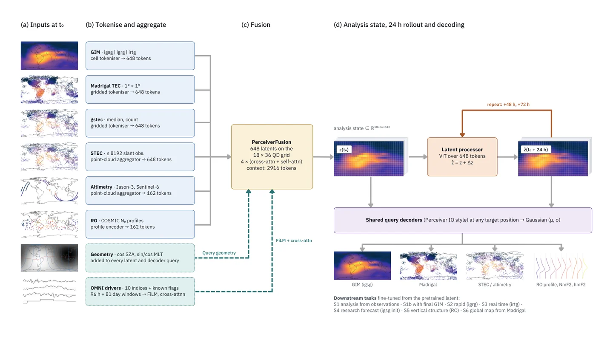

Hemera: a Multi-Modal Foundation Model for the Global Ionospheric State
6 data sources, 16 years fused into one 89M-parameter transformer
A foundation model for the ionosphere in the spirit of modern weather models. A Perceiver-style transformer fuses ionosphere maps, ground and slant GNSS, satellite altimetry, radio occultation and space-weather indices into one latent state of the global ionosphere, rolls it forward in 24 h steps and decodes any observable at any position. Pretrained by predicting observations it was not shown, then fine-tuned for analysis and forecasting.